がんゲノム変異シグネチャー解析

がんゲノムの変異シグネチャーの推定にチャレンジしてみました。
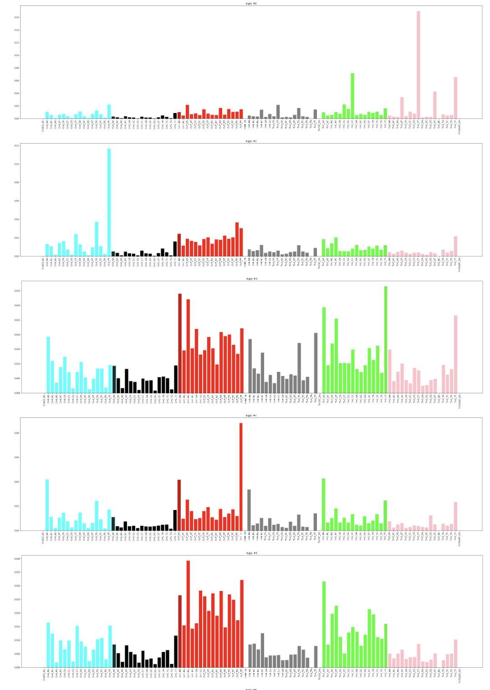
きっかけ
先日の遺伝学の講義にて、がんゲノムの変異シグネチャーを教えていただき、やり方も詳しく書かれていたので、挑戦してみました。
講義ではRでしたので、Pythonでも同じ結果が得られるか、Pythonの勉強も兼ねての挑戦記録です。
がんゲノムの変異シグネチャーとは？？
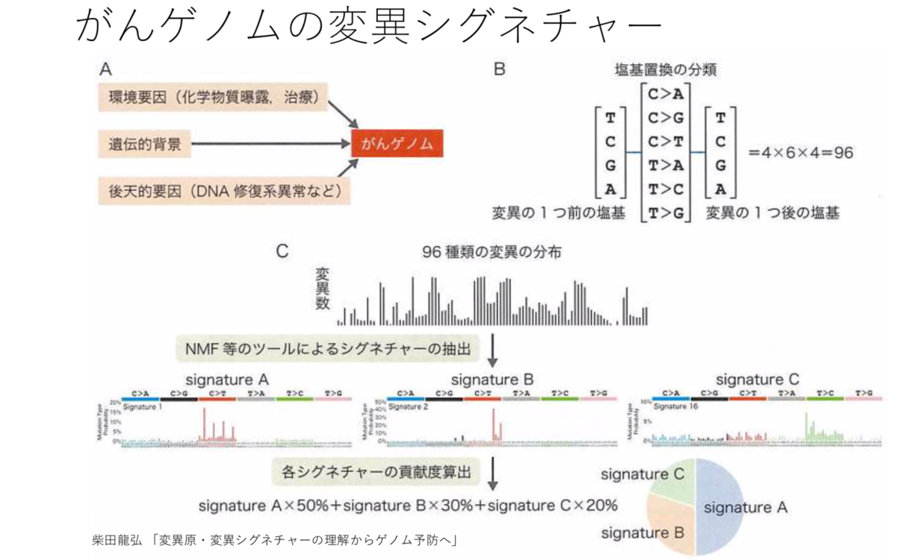
（がんゲノム情報学 中谷先生のスライドより）
トピックモデルとは？？
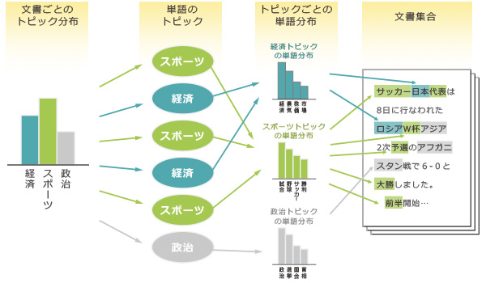
（https://www.albert2005.co.jp/knowledge/machine_learning/topic_model/about_topic_modelより）
がんゲノムの場合のトピックは？？
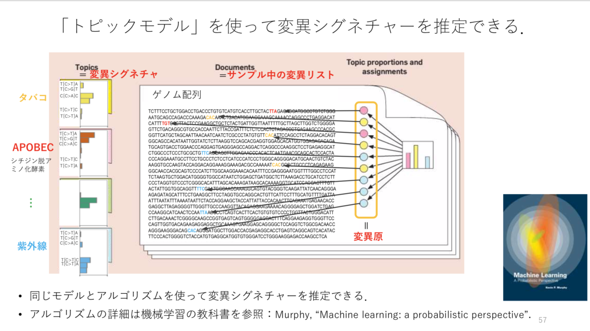
（がんゲノム情報学 中谷先生のスライドより）
一塩基ごとの変異情報がまとめられたテキストがDocumentsとして、がんの原因となる要素を一つ一つの「topic」、変異シグネチャーとして、トピックモデルを用いて推定します。
解析の方法
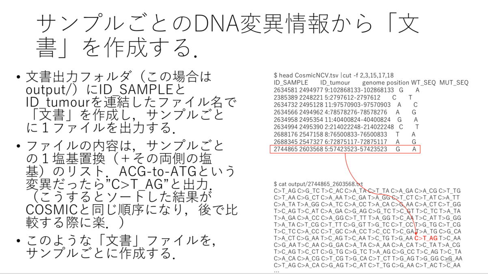
（がんゲノム情報学 中谷先生のスライドより）
データベースにある変異データには、
ゲノムの位置、その位置における変異前の塩基配列、変異後の配列
の情報が書かれています。
そこから変異の情報を、C>T_AGのような形でテキストファイルにIDごとに記録していきます。
鋳型鎖と相補鎖の関係より、変異前がCかTの側のみ を集計します。（＊注1）
その後、各IDごとに変異データのテキストファイルを集め、変異情報をDocumentsとして、トピック、変異シグネチャーを推定していきます。
使用したツール
- pandas
-
matplotlib
Pythonでおなじみのツールですね。 -
biopython
Python 用の計算機分子生物学パッケージです。
核酸やアミノ酸の配列情報を扱うためのFASTAファイルの処理が簡単になります。
（ドキュメントは読み切れていないので、いずれ読みたいです…）
公式：https://biopython.org/
参考： - https://qiita.com/sato32ha6/items/6b762b0d0314a5db7dc3
-
gensim（topicmodel）
今回の核となるトピックモデルについてはこちらを使います。
gensimは、様々なトピックモデルを実装したPythonライブラリです。
"topic modeling for humans"とあるように、実装が大変なトピックモデルを簡単に使うことができます。
今回はその中でも、LDA（Latent Dirichlet Allocation）を用います。
参考： - https://www.sejuku.net/blog/67863
gensimの使い方についてはこれが一番わかりやすかったです） -
https://www.machinelearningplus.com/nlp/topic-modeling-gensim-python/
-
wordcloud
matplotlib を利用して Word Cloud を作成できる Python ライブラリです。
wordcloud自体は、文章中で出現頻度が高い単語を複数選び出し、その頻度に応じた大きさで図示する手法です。
実践 〜解析〜
COSMICとは？
（HP：https://cancer.sanger.ac.uk/cosmic/）
COSMIC, the Catalogue Of Somatic Mutations In Cancer, is the world’s largest and most comprehensive resource for exploring the impact of somatic mutations in human cancer.
（公式サイトより）
がんと関連する体細胞変異の情報を集積したデータベースです。
今回はこちらにある変異データを解析の対象としています。
参考：統合TV https://togotv.dbcls.jp/20180127.html
データのダウンロード
がんゲノムの変異データをCOSMCのサイトからダウンロードします。 - https://cancer.sanger.ac.uk/cosmic/download
データを無料でダウンロードするには、学生としての登録が必要でした。 今回は様々なデータの中でも、Non coding variantsのものを使いました。 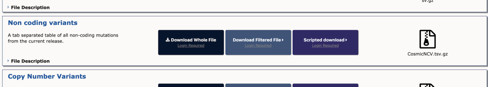
リファレンス配列の入手
今回はUCSCからhg38をダウンロードしました。
$ wget http://hgdownload.soe.ucsc.edu/goldenPath/hg38/bigZips/hg38.fa.gz
こちらのフォーマットはfastaで、
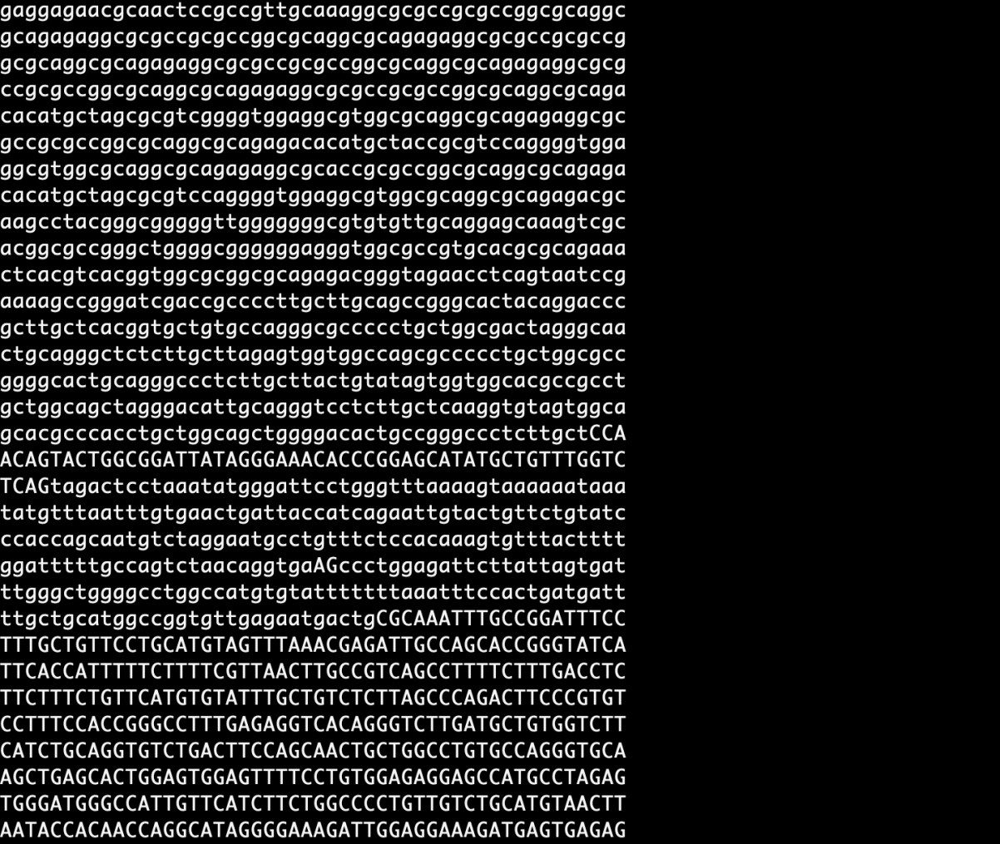
のような感じで並んでいます。
配列にAやaなど、大文字と小文字が並んでいるのは、大文字の A, C, G, T はコード領域、小文字の a, c, g, t はコード領域以外を表します。
変異データを覗いてみる
COSMICから入手したデータがどんなフォーマットなのか見てみました。
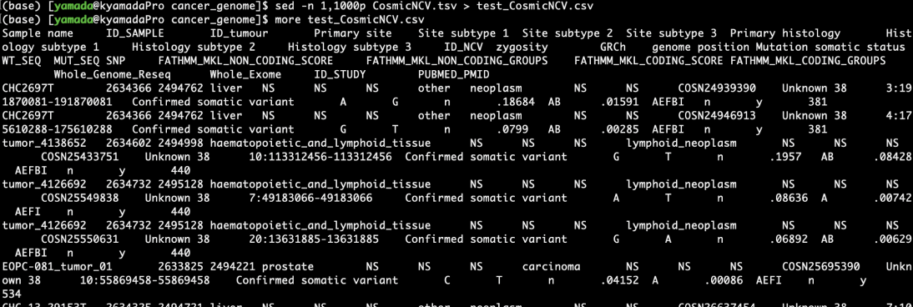
ここからサンプルID、ゲノムのposition、元の配列、変異後の配列、という形で抽出し手確認しました。
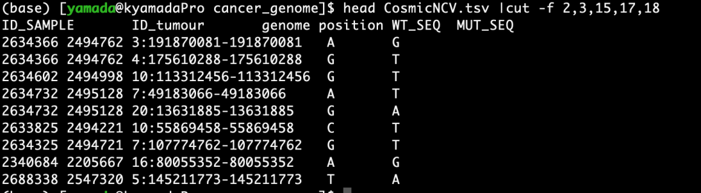
公式サイトによると、変異データのフォーマットは以下のようになっているようです。
[column number:label] Heading
[1:A] Sample name,Sample id,Tumour id – A sample is an instance of a portion of a tumour being examined for mutations. The sample name can be derived from a number of sources. In many cases it originates from the cell line name. Other sources include names assigned by the annotators, or an incremented number assigned during an anonymisation process. A number of samples can be taken from a single tumour and a number of tumours can be obtained from one individual. A sample id is used to identify a sample within the COSMIC database. There can be multiple ids, if the same sample has been entered into the database multiple times from different papers.
[4:D] Primary Site – The primary tissue/cancer from which the sample originated. More details on the tissue classification are avaliable from here. In COSMIC we have standard classification system for tissue types and sub types because they vary a lot between different papers.
[5:E] Site Subtype 1 – Further sub classification (level 1) of the samples tissue of origin.
[6:F] Site Subtype 2 – Further sub classification (level 2) of the samples tissue of origin.
[7:G] Site Subtype 3 – Further sub classification (level 3) of the samples tissue of origin.
[8:H] Primary Histology – The histological classification of the sample.
[9:I] Histology Subtype 1 – Further histological classification (level 1) of the sample.
[10:J] Histology Subtype 2 – Further histological classification (level 2) of the sample.
[11:K] Histology Subtype 3 – Further histological classification (level 3) of the sample.
[12:L] Mutation Id – unique mutation identifier.
[13:M] Zygosity – Information on whether the mutation was reported to be homozygous , heterozygous or unknown within the sample.
[14:N] GRCh – The coordinate system used –
38 = GRCh38/Hg38
37 = GRCh37/Hg19
[15:O] Genome position – The genomic cooridnate of the mutation.
[16:P] Mutation somatic status – Information on whether the sample was reported to be Confirmed Somatic, Previously Reported or Variant of unknown origin –
Confirmed Somatic = if the mutation has been confimed to be somatic in the experiment by sequencing both the tumour and a matched normal from the same patient.
variant of unknown origin = when the mutation is known to be somatic but the tumour was sequenced without a matched normal.
Previously observed = when the mutation has been reported as somatic previously but not in current paper.
[17:Q] WT SEQ – wild type sequence.
[18:R] MUT SEQ – Mutated sequence.
[19:S] SNP – All the known SNPs are flagged as ‘y’ defined by the 1000 genomes project, dbSNP and a panel of 378 normal (non-cancer) samples from Sanger CGP sequencing.
[20:T] FATHMM_MKL_NON_CODING_SCORE – FATHMM-MKL non-coding score. A p-value ranging from 0 to 1 where >= 0.7 is functionally significant.
[21:U] FATHMM_MKL_NON_CODING_GROUPS – FATHMM-MKL group classification. More details from here.
[22:V] FATHMM_MKL_CODING_SCORE – FATHMM-MKL coding score (p-value ranging from 0 to 1).
[23:W] FATHMM_MKL_CODING_GROUPS – FATHMM-MKL group classification (coding). More details from here.
[24:X] Whole Genome Reseq – if the enitre genome is sequenced.
[25:Y] Whole_Exome – if the enitre exome is sequenced.
[26:Z] Id Study – Lists the unique Ids of studies that have involved this non coding mutation.
[27:AA] Pubmed_PMID – The PUBMED ID for the paper that the sample was noted in.
変異ファイルの処理
ここが一番苦労しました。。。
簡単な流れ
- 変異データをpandasで読み込む
- MUT_SEQについて、genome_positionからリファレンス配列を参照して、変異配列の前後の配列を探し出す
- DataFrameの新しいcolumnとして配列を追加していく
- ID_tumorごとに、配列の変異をテキストファイルに書き出していく。
- tumorごとの変異についてのテキストファイルをもとに、トピックモデルをgensimを使って作成する。
- 可視化する。
以下実際のコードです。
ライブラリのimport
import pandas as pd
from Bio import SeqIO
import re
import sys
COSMICの変異データをpandasでDataFrameとして読み込みます。
mut_file='CosmicNCV.tsv'
ref_fasta='hg38.fa'df_cosmic=pd.read_table(mut_file)
df_cut=df_cosmic[['ID_SAMPLE', 'ID_tumour','genome position','WT_SEQ', 'MUT_SEQ']]
df_cut.head()
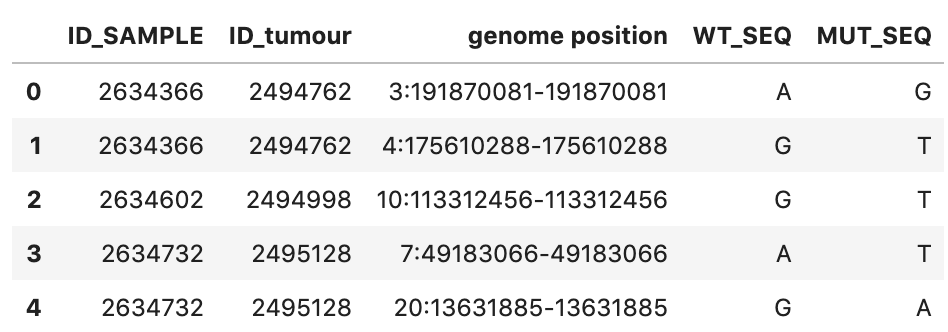
上記のようにDataFrameとしてきれいに読み込めました。
リファレンス配列の読み込み
ここではbiopythonを使って簡単に配列部分を取り出します。
#リファレンスファイルについて
list_id=[]
list_desc=[]
list_seq=[]#biopythonを用いて、idやdesc、seqを抽出
for record in SeqIO.parse(ref_fasta, 'fasta'):
id_part = record.id
desc_part = record.description
seq = record.seq
list_id.append(id_part)
list_desc.append(desc_part)
list_seq.append(seq)
塩基配列はlist_seqに入っています。
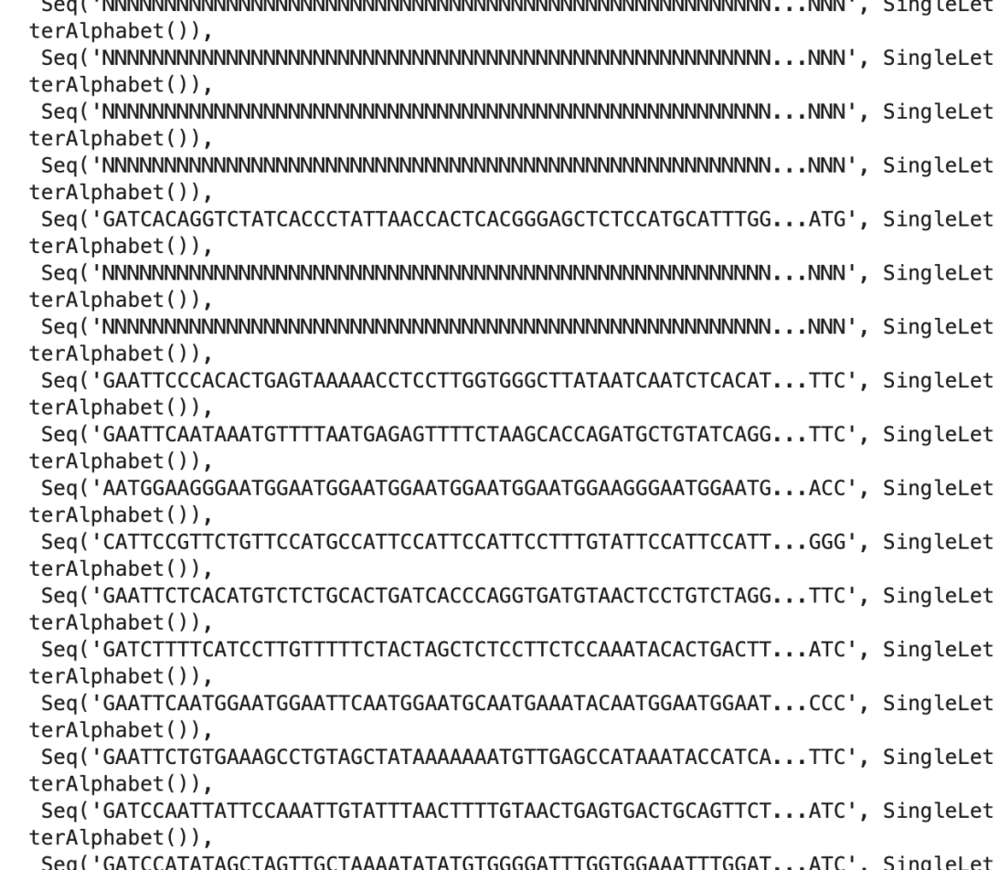
全てリスト形式なので、
print(len(list_seq[49]))
print(list_desc[49])19829559
chr3
のように各染色体ごとに見るこができます。
COSMICのdf（DataFrame）の操作
- df_cutのgenome_positionについて、染色体番号とゲノムの位置に分割して新しいカラムとして追加します。
#chr、genome position用の空のリストを作成
list_cut_chr=[]
list_cut_pos=[]
for i in range(len(df_cut)):
list_cut_chr.append((re.split('[:-]',df_cut['genome position'][i]))[0])
list_cut_pos.append((re.split('[:-]',df_cut['genome position'][i]))[1])
#df_cutに新しいカラムとして追加。
df_cut['chr']=pd.Series(list_cut_chr)
df_cut['single position']=pd.Series(list_cut_pos)
df_cut.head()
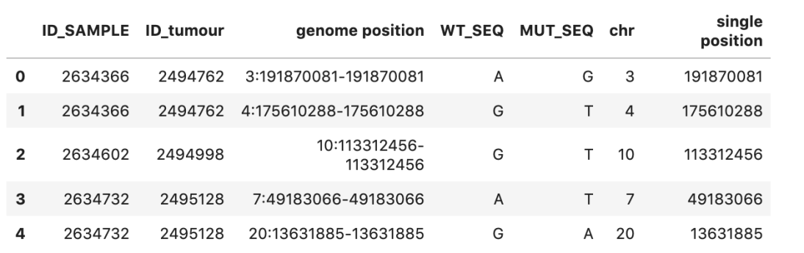
- MUT_SEQの欠損値、chr23、24、25を除く。
#mutのdfからchr23、24、MUT_SEQのnanを除く
df_cut_chr=df_cut[(df_cut['chr'] != '23') & (df_cut['chr'] != '24') & (df_cut['chr'] != '25')]
df_cut_chr.dropna(subset=['MUT_SEQ'],inplace=True)#indexを振り直す
df_cut_chr_i=df_cut_chr.reset_index()
なぜかCOSMICのデータにchr22以上のものが含まれていたので、除きました。
リファレンス配列から、MUT_SEQの前後の配列を抽出
#refから変異位置の前後の配列を抽出
seq_before=[]
seq_after=[]
for i in range(len(df_cut_chr_i)):
seq_before.append(list_seq[list_id.index('chr'+df_cut_chr_i['chr'][i])][int(df_cut_chr_i['single position'][i])-2])
seq_after.append(list_seq[list_id.index('chr'+df_cut_chr_i['chr'][i])][int(df_cut_chr_i['single position'][i])])
COSMICのdfと合わせていく。
- 変異の前後の配列について、dfに追加し、大文字に直す
df_cut_chr_i['seq_before']=pd.Series(seq_before)
df_cut_chr_i['seq_after']=pd.Series(seq_after)#大文字に変更
df_cut_chr_i['seq_before']=df_cut_chr_i['seq_before'].str.upper()
df_cut_chr_i['seq_after']=df_cut_chr_i['seq_after'].str.upper()
- 前、変異、後の3つの配列を新しいカラムの中に追加する （以下のようなややこしいカラムを作っているのは（＊注1）のためです）
#3文字の配列にする（seq_forwardが鋳型）
df_cut_chr_i['seq_forward']=df_cut_chr_i['seq_before']+df_cut_chr_i['MUT_SEQ']+df_cut_chr_i['seq_after']#鋳型鎖の順番を逆にしたもの（相補鎖を作るため）
df_cut_chr_i['seq_forward_r']=df_cut_chr_i['seq_after']+df_cut_chr_i['MUT_SEQ']+df_cut_chr_i['seq_before']
ここまでで以下のようになります。（dfの右側だけ）
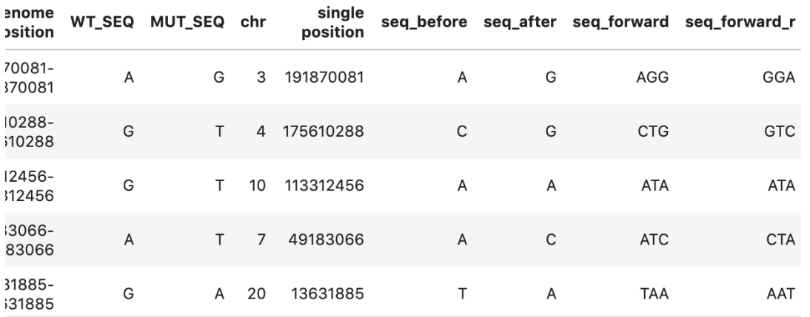
- 3つの配列について、相補鎖を作ります
#辞書型で相補鎖に変換
dict_base={"A":"T","G":"C","C":"G","T":"A"}
list_seq_reverse=[]
list_wt_seq_reverse=[]
for i in range(len(df_cut_chr_i)):
list_seq_reverse.append((df_cut_chr_i['seq_forward_r'][i]).translate(str.maketrans(dict_base)))
#次のために、変異の配列も変換しておきます。 list_wt_seq_reverse.append((str(df_cut_chr_i['WT_SEQ'][i])).translate(str.maketrans(dict_base)))
df_cut_chr_i['seq_reverse']=pd.Series(list_seq_reverse)
df_cut_chr_i['WT_seq_reverse']=pd.Series(list_wt_seq_reverse)
変異の情報をテキストファイルに書き出す
いよいよ最後のステップです。
#ID_tumorのカウント
dict_tumor_id=df_cut_chr_i['ID_tumour'].value_counts().to_dict()list_tumor_id = list(dict_tumor_id.keys())
まずはIDをリストに格納します。
df_cut_chr_i['ID_tumour'].value_counts()
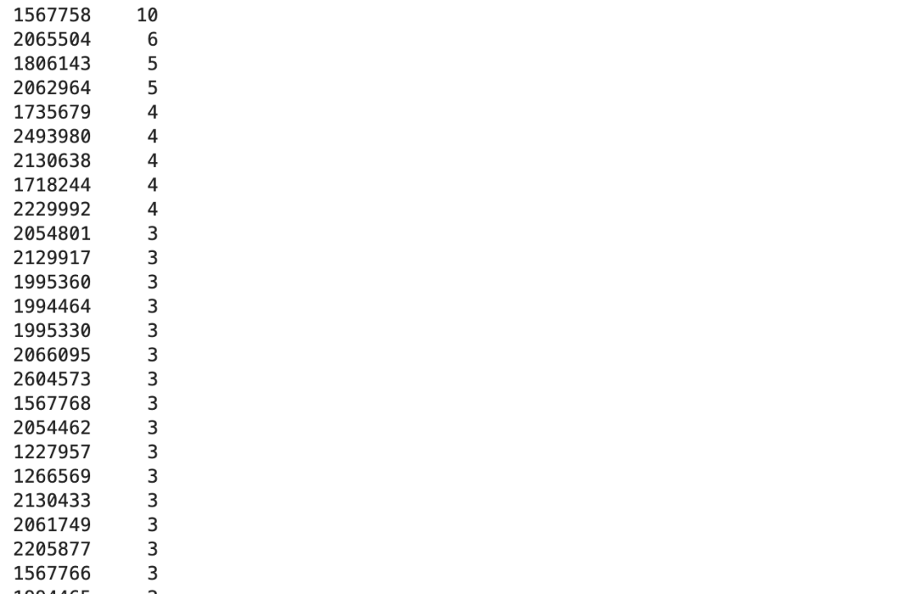
（上はテストファイルで行ったため、実際の数値とは異なります。）
いろいろな試行錯誤したコードで、テキストファイルに書き出していきます。
df_index_for_id=pd.DataFrame()
for i in list_tumor_id:
df_index_for_id['index_{}'.format(i)]=pd.Series((df_cut_chr_i[df_cut_chr_i['ID_tumour']==i]).index)
for j in df_index_for_id['index_{}'.format(i)]:
if pd.isnull(j)==True:
continue
else:
with open("text_2/{}.txt".format(i), "a") as f:
if (df_cut_chr_i.iloc[int(j)])['WT_SEQ']=='C'or (df_cut_chr_i.iloc[int(j)])['WT_SEQ']=='T':
f.write((df_cut_chr_i.iloc[int(j)])['WT_SEQ']+'>'+(df_cut_chr_i.iloc[int(j)])['MUT_SEQ']+\
'_'+(df_cut_chr_i.iloc[int(j)])['seq_forward'][0:1]+\
(df_cut_chr_i.iloc[int(j)])['seq_forward'][2:3]+' ')
elif(df_cut_chr_i.iloc[int(j)])['WT_SEQ']=='A'or (df_cut_chr_i.iloc[int(j)])['WT_SEQ']=='G':
f.write((df_cut_chr_i.iloc[int(j)])['WT_seq_reverse']+'>'+(df_cut_chr_i.iloc[int(j)])['seq_reverse'][1:2]+\
'_'+(df_cut_chr_i.iloc[int(j)])['seq_reverse'][0:1]+\
(df_cut_chr_i.iloc[int(j)])['seq_reverse'][2:3]+' ')
else:
continue
（特に速度のことは考えずに直感的にforで回したので、かなり時間がかかります。） ここまでで変異のデータをIDごとに抽出することができました！
上のスクリプトをサーバーにでも投げてしばらく待ちます。
トピックモデルを使ってみる
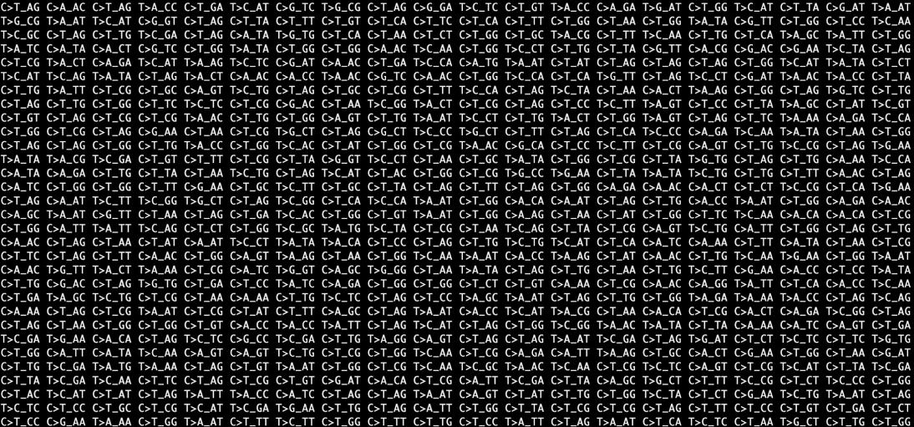
4までの操作で各IDごとの上のように、変異データが得られました。
これをトピックモデルを使って解析していきます。
import gensim
from collections import Counter
import matplotlib.pyplot as plt
from wordcloud import WordCloud
ディレクトリ内のファイルリストを取得する
import glob
import os
os.chdir("/Users/***/test/cancer_genome")
list_file_name=glob.glob("./text_2/*")list_file_name[0]
変異データを一つのリスト内に格納する
list_text=[]
for i in list_file_name:
if len((open('{}'.format(i), 'r')).readlines())!=1:
continue
else:
list_text.append(list(((open('{}'.format(i), 'r')).readlines())[0].split()))
トピックモデル
#辞書を作成
dictionary = gensim.corpora.Dictionary(list_text)
corpus = [dictionary.doc2bow(text) for text in list_text]#トピックモデルの学習
num_topics = 20
lda = gensim.models.ldamodel.LdaModel(
corpus=corpus,
num_topics=num_topics,
id2word=dictionary
)
トピック数（num_topics）については後述します。
これでトピックモデルの学習ができました。ここは実行時間はそこまで長くありません。
lda.show_topic(0,200)
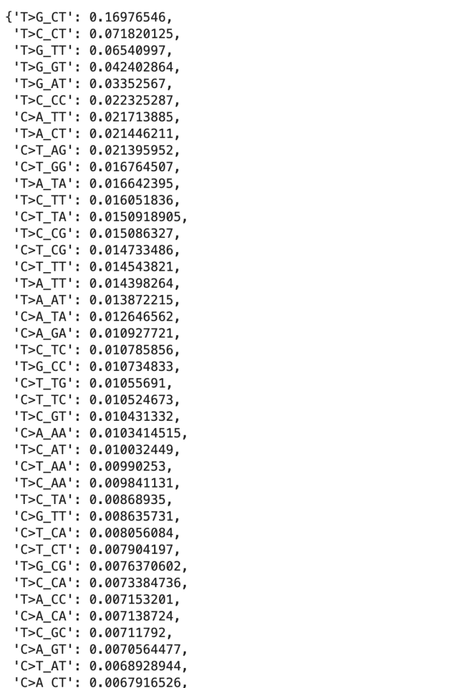
結果を見てみると、各トピックごとに、各変異がどれほどの割合を占めているのか、というのがわかります。
可視化
おなじみmatplotlibを使ってグラフにしてみます。
import collections
clist=[(0, "red"), (16/102, "red"),\
(17/102, "orange"),(32/102, "orange"),\
(33/102, "green"),(48/102, "green"),\
(49/102, "salmon"),(66/102, "salmon"),\
(67/102, "blue"),(83/102, "blue"),\
(84/102, "black"),(102/102, "black")]
rvb = mcolors.LinearSegmentedColormap.from_list("", clist)
n=102
plt.figure(figsize=(30,30))
dict_topic=dict(sorted(dict(lda.show_topic(0,102)).items()))
x=np.array(range(len(dict_topic)))
plt.ylim(0,0.2)
plt.bar(range(len(dict_topic)), dict_topic.values(), align='center',color=rvb(x/102))
plt.xticks(range(len(dict_topic)), list(dict_topic.keys()), rotation=90)
plt.show()
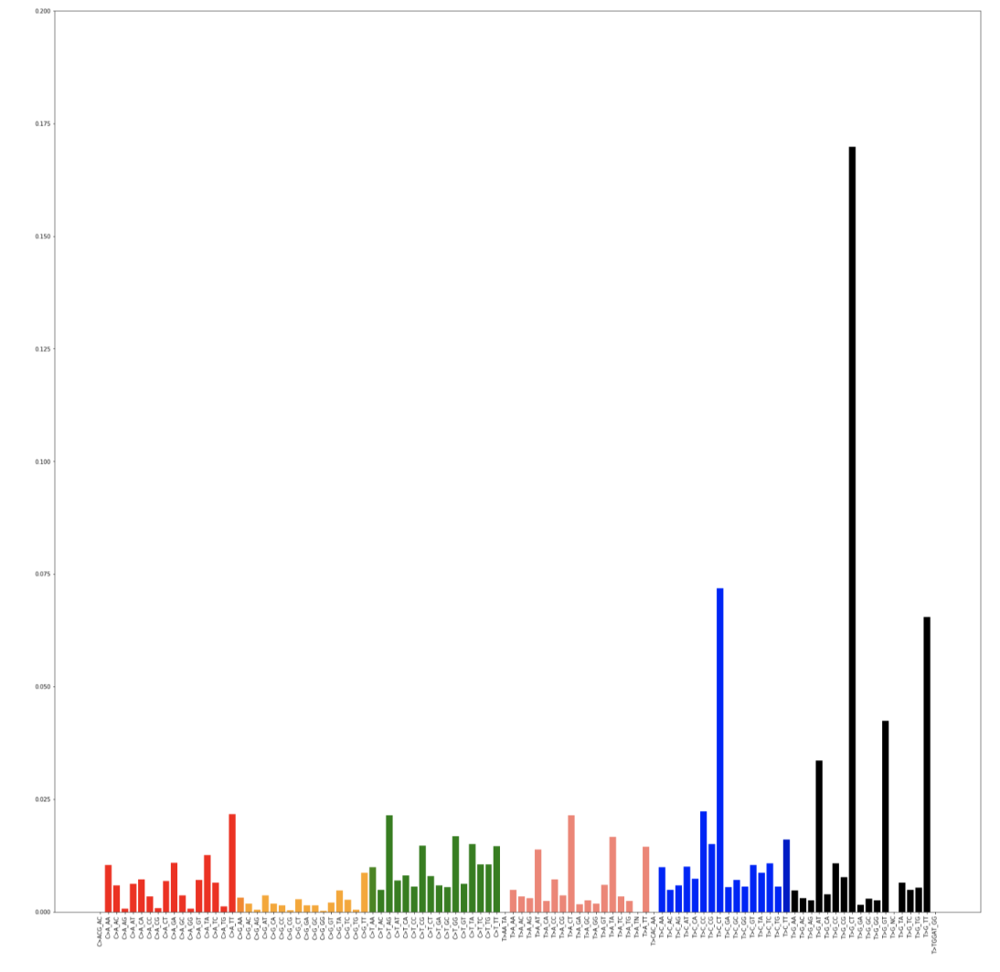
リストで色を指定することで、このように変異の種類（T>C、T>A、C>Gなど）ごとに色づけすることができました。 - 参考：https://stackoverflow.com/questions/42656585/barplot-colored-according-a-colormap
これをトピックごとにグラフを作成し、画像として保存します。
clist=[(0, "aqua"), (16/102, "aqua"),\
(17/102, "black"),(32/102, "black"),\
(33/102, "red"),(48/102, "red"),\
(49/102, "gray"),(66/102, "gray"),\
(67/102, "lime"),(83/102, "lime"),\
(84/102, "pink"),(102/102, "pink")]
rvb = mcolors.LinearSegmentedColormap.from_list("", clist)for i in range(lda.num_topics):
plt.figure(figsize=(40,10))
#plt.subplot(lda.num_topics,2,i+1)
dict_topic=dict(sorted(dict(lda.show_topic(i,102)).items()))
x=np.array(range(len(dict_topic)))
plt.title("topic #{}".format(i+1))
plt.bar(range(len(dict_topic)), dict_topic.values(), align='center',color=rvb(x/102))
plt.xticks(range(len(dict_topic)), list(dict_topic.keys()), rotation=90)
plt.savefig('topic_pdf/topicmodel_ms_{}.pdf'.format(i+1))
（色はCOSMICのグラフのものと揃えました）
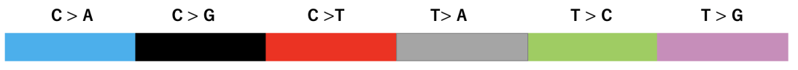
データベースのシグネチャと比較
COSMICには、今までに推定されてきたがんゲノムの変異シグネチャーが多数登録されています。 - https://cancer.sanger.ac.uk/cosmic/signatures/SBS/
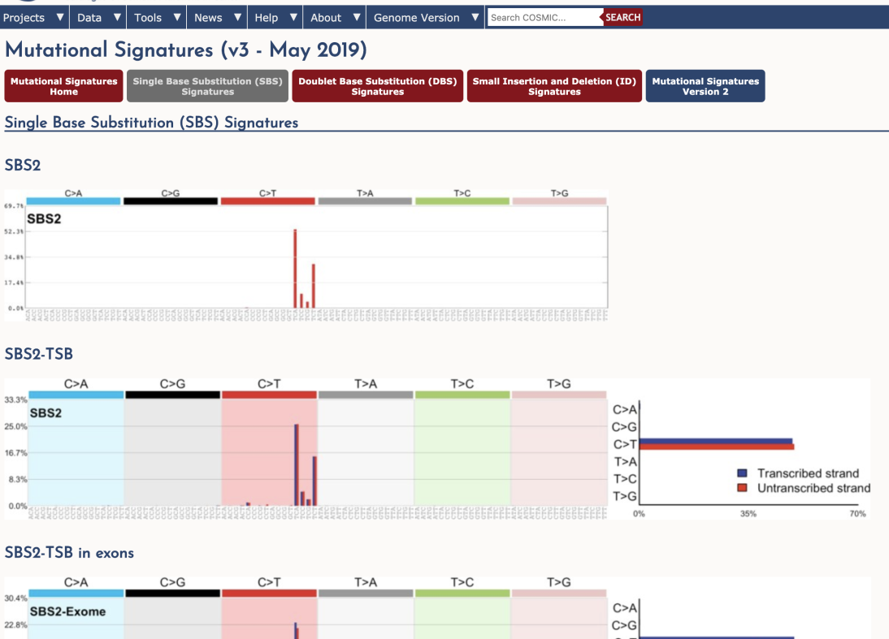
シグネチャーのグラフと、関連するがんの原因が示されています。
推定
今回の課題は、「たばこ/紫外線のシグネチャーを見つけることができたか」でした。
データベースにあるグラフとどれほど一致しているか見ていきます。
COSMICに掲載されているシグネチャーSBS1〜SBS85までのうち、
- たばこ（tobacco）が原因とされるもの→SBS4、5、29
- 紫外線（ultraviolet light）が原因とされるもの→SBS7a〜d、38
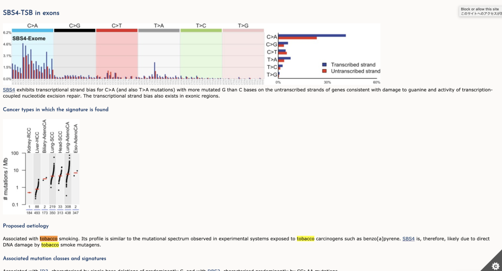
であるとわかりました。
推定結果
-たばこ-
①SBS4
- COSMIC
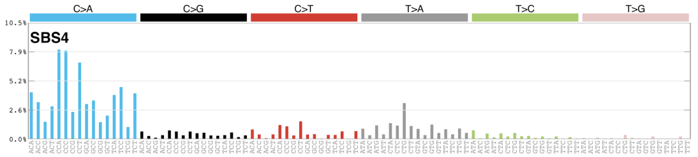
- 推定
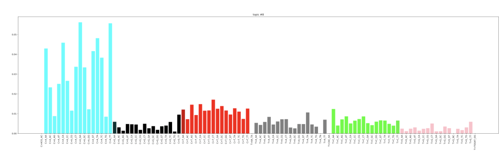
②SBS5
- COSMIC
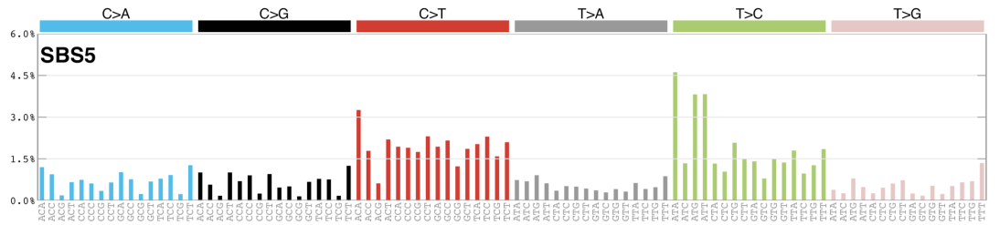
- 推定
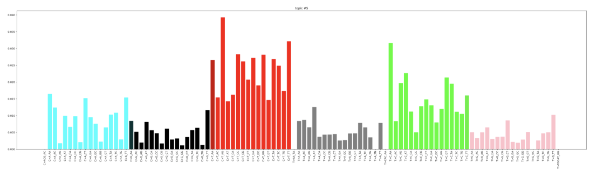
③SBS29
- COSMIC
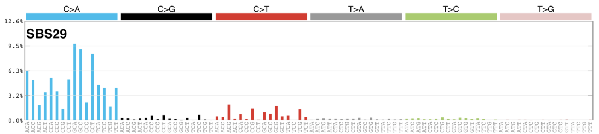
- 推定
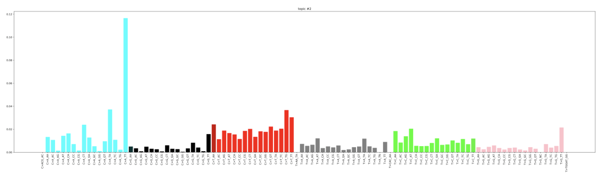
-紫外線-
①SBS7a - COSMIC
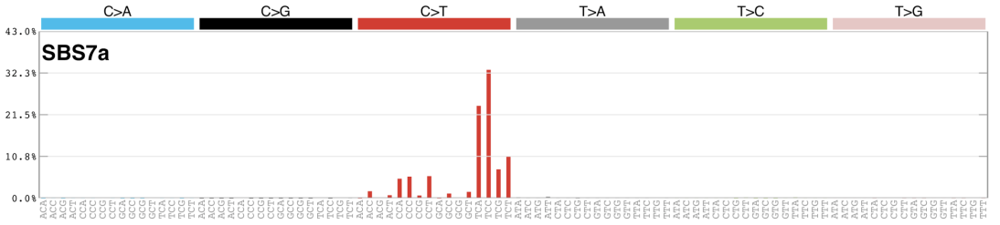
- 推定
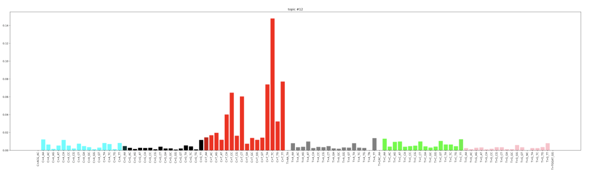
②SBS7b
- COSMIC
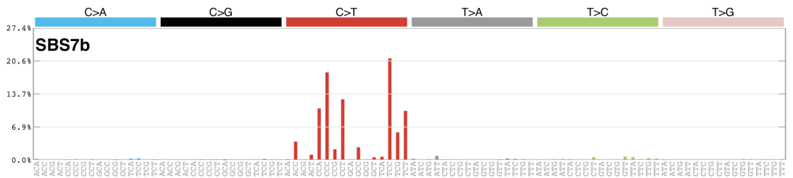
- 推定
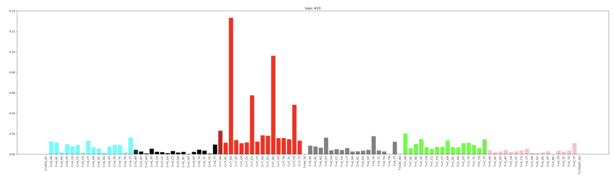
③SBS7c
- COSMIC
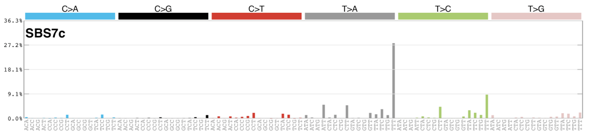
- 推定
類似しているシグネチャーは確認できませんでした。
④SBS7d
- COSMIC
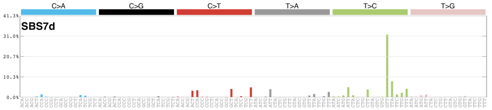
- 推定
類似しているシグネチャーは確認できませんでした。
⑤SBS38
- COSMIC
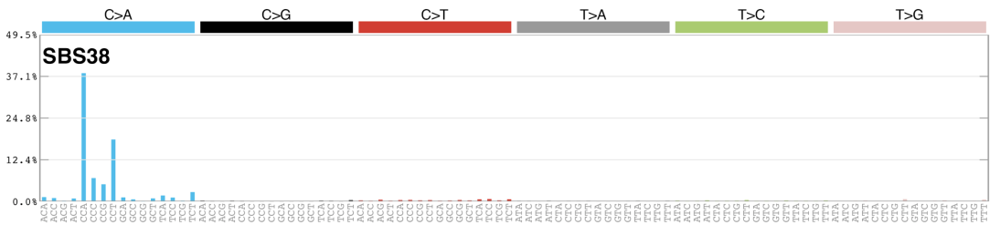
- 推定
類似しているシグネチャーは確認できませんでした。
どれも完全に一致しているとは言えないのですが、近いものはそれなりに類似しているグラフが作れたのではないかと思います。
シグネチャーを見るだけでも、「たばこを原因とするがんは、変異の種類が多い」、「紫外線を原因とするがんは、変異の種類が少ない」という傾向も見て取れます。
おまけ -WordCloudによる可視化-
トピックモデルで単語を扱う際によく同時にやられているものとして、WordCloudがあったため、変異データでもやってみました。
plt.figure(figsize=(30,30))
for t in range(lda.num_topics):
plt.subplot(5,4,t+1)
x = dict(lda.show_topic(t,200))
im = WordCloud().generate_from_frequencies(x)
plt.imshow(im)
plt.axis("off")
plt.title("Topic #" + str(t))
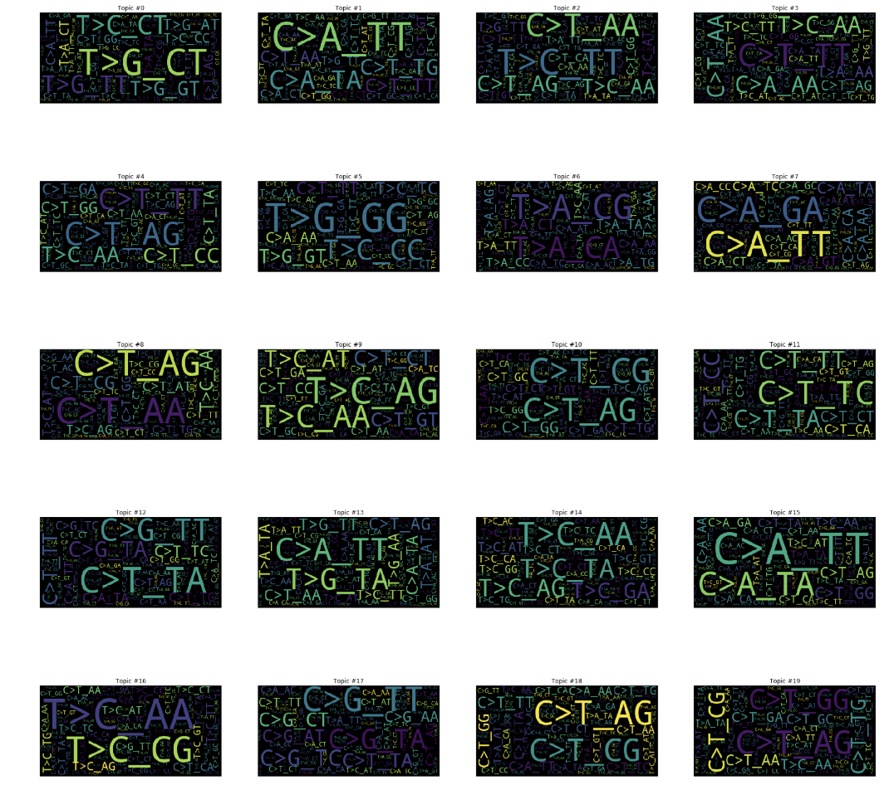
今後やってみたいこと
がんゲノムの変異シグネチャーは、最初に発表された論文ではNon- negative Matrix Factorization(NMF)(非負値行列因子分解)を使って推定された。2019年になって「トピックモデル」を使って変異 シグネチャを推定する論文が二報発表された。
1. Funnell, T. et al. Integrated structural variation and point mutation signatures in cancer genomes using correlated topic models. PLOS Computational Biology 15, e1006799 (2019). 2. Matsutani, T., Ueno, Y., Fukunaga, T. & Hamada, M. Discovering novel mutation signatures by latent Dirichlet allocation with variational Bayes inference. Bioinformatics doi:10.1093/bioinformatics/btz266
このような背景があったため今回はトピックモデルを使ってみたのですが、NMFを用いた推定もやってみたいです。
変異シグネチャーの個数については、今回のセッティングが最適ではなく、丁寧にやるならhierarchical dirichlet process (HDP) を用いるか、perplexity、coherenceなどの評価指標を用いる必要があるのかと思いました。 - 参考：https://www.randpy.tokyo/entry/word2vec_skip_gram_model
参考
今回のコード、作成したグラフ等はGitHubにあります。 - https://github.com/ykohki/cancer_signature
トピックモデルを用いたがんゲノムの変異シグネチャー解析 - https://ipsj.ixsq.nii.ac.jp/ej/index.php?active_action=repository_view_main_item_detail&page_id=13&block_id=8&item_id=182433&item_no=1
がんゲノムビッグデータから喫煙による遺伝子異常を同定 - https://www.ncc.go.jp/jp/information/pr_release/2016/1104/index.html - https://science.sciencemag.org/content/354/6312/618
同じ変異シグネチャーについて調べていて、特にたばこについて見ている論文でした - https://www.nature.com/articles/nature12477#associating-cancer-aetiology-and-mutational-signatures